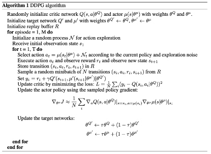

DDPG
文章名称为《CONTINUOUS CONTROL WITH DEEP REINFORCEMENT LEARNING》，对于DQN只能处理低维离散动作空间的问题，提出了一种基于确定性策略梯度的无模型算法，该算法可以在连续的动作空间中运行。
ALGORITHM
直接应用Q-Learning到连续动作空间是是不可能的，因为在连续的空间中寻找greedy policy 需要在每一步都对动作进行优化，这种优化在面对大的没有约束的函数近似以及非平凡的动作空间在实际训练中太慢。这里我们采用的是基于DPG算法的actor-critic方法。
一方面直接学习policy策略，另一方面学习Q值来改进策略：
为了解决收敛问题，采用了与target network类似的方法，但是采用的是actor-critic and以及用“soft” target updates $Q'(s,a|\theta ^{Q'})$以及$\mu'(s,|\theta^{\mu'})$用来计算目标值，然后通过让这些目标网络缓慢地‘跟踪’学习网络来更新它们的权重
目标值被限制为缓慢变化,极大地提高学习的稳定性。这个简单的改变使得相对不稳定的学习行为值函数问题更接近于监督学习的情况。
在连续的活动空间中学习的另一个主要挑战是探索。像DDPG这样的off policy算法的一个优点是，我们可以独立于学习算法来处理探索问题。构建探索策略,通过在行动策略中从噪声过程N中采样噪声。
Batch Normalization
当从低维特征向量观测中学习时，观测的不同组成部分可能具有不同的物理单位(例如，位置与速度)，并且范围可能随着环境的不同而变化。这可能使网络难以有效地学习，也可能使其难以找到跨不同规模状态值的环境进行泛化的超参数。
用batch normalization，我们能够有效地学习许多不同的任务与不同类型的单元，无需手动确保单元位于设置范围内。
算法框图
